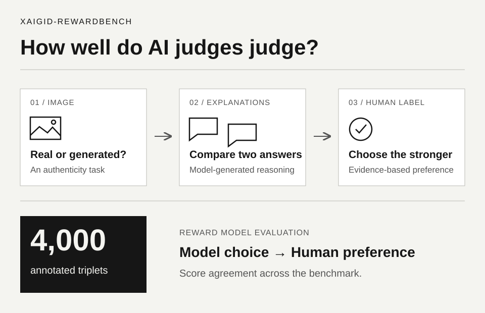

Annotated triplets.
AI research
XAIGID-RewardBench
Evaluating explanations for AI-generated image detection. First-author paper accepted to COLM 2026.
Related work was accepted to the NeurIPS 2025 GenProCC workshop. The linked preprint and repository document that earlier work; the preprint is not the COLM 2026 publication.

Format
Image. Two explanations. Human preference.
- Built dataset curation and triplet construction pipelines.
- Implemented judge prompting, parsing, scoring, failure logging, and downstream experiments.
- PyTorch, Hugging Face, AWS, Azure, DPO, MLLM evaluation.
First-author paper accepted.
Design, annotations, experiments.
Benchmark example
One example triplet
Annotation task
Choose the stronger explanation.
Choose a response
Input image
Is this image real or AI-generated?
Human preference
Response 2 is better
Human annotators preferred Gemini's answer because it gives a more specific, evidence-grounded explanation.
Reward model evaluation
Score agreement with human preference.
Reward models receive the same image and candidate explanations, choose the stronger response, and are scored by how often their choices align with human labels across the benchmark.
Triplet
Model pick
Human label
Alignment score